6.1 Advanced Physical Chemistry Core Practicals
Rates, activation energy, Ka and electrochemical cells
6.1 Advanced Physical Chemistry Core Practicals
本页对应 6.1 Advanced Physical Chemistry Core Practicals.pdf.pdf，整理 Pearson Edexcel International Advanced Level Chemistry 的五个 advanced physical chemistry core practicals。专业词汇保留 English，重点放在 method、control variables、data processing、uncertainty、evaluation 和 exam wording。
Practical overview
| Core Practical | Main idea | Main data treatment |
|---|---|---|
| 9a · Titrimetric method | Follow iodine concentration during a reaction | Titre, concentration-time graph, reaction order |
| 9b · Iodine clock reaction | Use a sudden blue-black colour change as a timer | Rate ∝ 1/t, rate-concentration graph |
| 10 · Activation energy | Compare rate constants at different temperatures | Arrhenius plot, gradient = -Ea/R |
11 · Finding Ka |
Titrate a weak acid and locate half-equivalence point | pH = pKa, Ka = 10^-pKa |
| 12 · Electrochemical cells | Measure the EMF of metal / metal-ion half-cells | Ecell = Epositive - Enegative |
Learning objectives
学完本页后，你应该能够：
- plan a valid practical and identify independent、dependent and control variables；
- select suitable apparatus、reagents、indicators and measurement intervals；
- process raw results into concentration、rate、
k、Ea、KaorEcell； - explain anomalous results、repeat measurements、uncertainty 和 improvements；
- write a conclusion using evidence from a graph or calculated value。
6.1.1 Rates of Reaction - Titrimetric Method
Core Practical 9a: following iodine concentration
Iodine reacts with propanone in acidic solution：
\[ \ce{CH3COCH3(aq) + I2(aq) -> CH3COCH2I(aq) + H+(aq) + I-(aq)} \]
在 experiment 中，propanone 和 sulfuric acid 用 large excess，因而它们的 concentration 在每一次取样期间近似 constant。通过在不同 time withdraw a fixed volume reaction mixture，再用 sodium thiosulfate titration 测量剩余 iodine concentration，可以研究 reaction rate。
Titration reaction：
\[ \ce{2S2O3^{2-}(aq) + I2(aq) -> 2I-(aq) + S4O6^{2-}(aq)} \]
Starch 是 indicator；endpoint 附近的 blue-black colour disappears。加入 sodium hydrogencarbonate 可以使 withdrawn sample 中的 reaction stop，避免 titration 期间 iodine 继续消耗。
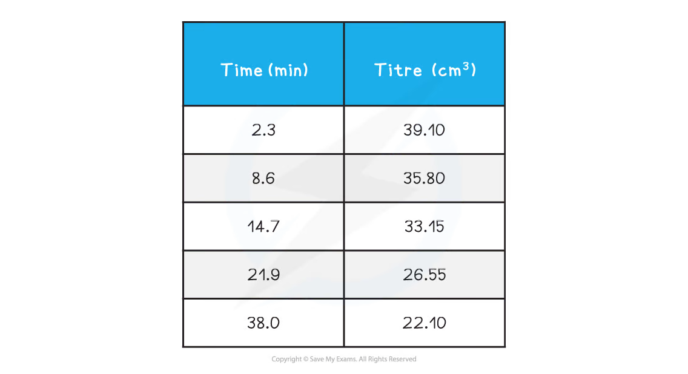
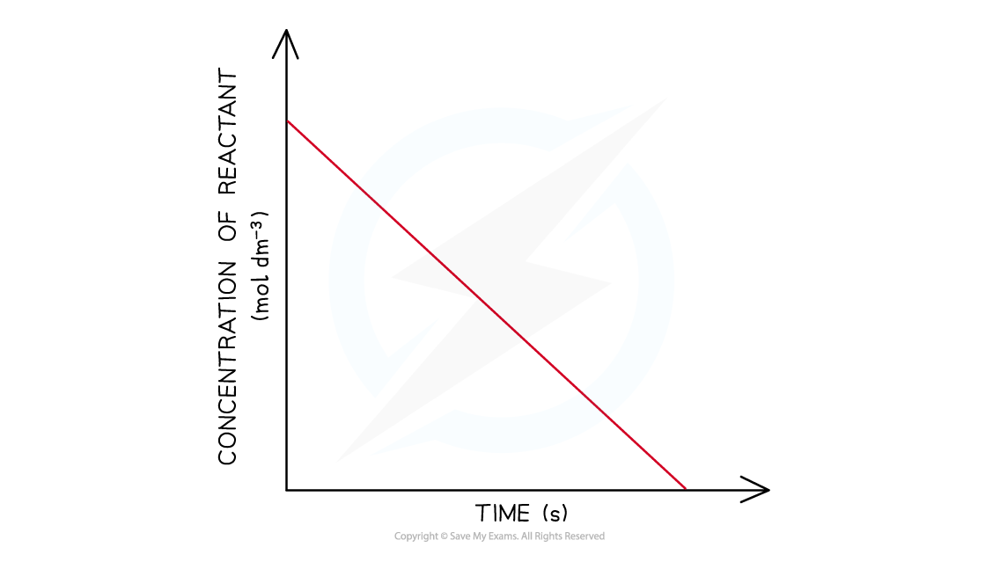
Suggested procedure
- Mix measured volumes of aqueous propanone and sulfuric acid in a beaker。
- Add a measured volume of iodine solution and start the clock immediately。
- Using a pipette，withdraw a fixed volume at regular time intervals。
- Add sodium hydrogencarbonate to stop the reaction in the withdrawn portion。
- Titrate against standard sodium thiosulfate using starch；record the titre。
- Repeat the sampling and titration at least five times，including an early and a late time point。
Data processing
- titre
→moles ofS2O3^2-； - use the stoichiometric ratio 2:1 to calculate moles of iodine；
- divide by the aliquot volume to obtain
[I2]； - plot
[I2]against time and inspect linearity； - a straight line with constant negative gradient is evidence for zero-order behaviour with respect to iodine。
Practical control and evaluation
- use the same pipette、burette、aliquot volume and thiosulfate concentration throughout；
- record the time when sodium hydrogencarbonate is added，not only the time when the titration begins；
- keep the clock running continuously；
- rinse the pipette with reaction mixture and the burette with thiosulfate solution；
- read the meniscus at eye level and add titrant dropwise near the endpoint；
- repeat titres until concordant values are obtained；
- a delay between sampling and quenching makes the calculated iodine concentration too low。
6.1.2 Rates of Reaction - Clock Reaction
Core Practical 9b: iodine clock reaction
The main redox reaction is：
\[ \ce{H2O2(aq) + 2I-(aq) + 2H+(aq) -> I2(aq) + 2H2O(l)} \]
Sodium thiosulfate removes iodine as it forms：
\[ \ce{2S2O3^{2-}(aq) + I2(aq) -> 2I-(aq) + S4O6^{2-}(aq)} \]
只要 thiosulfate remains，starch 不会呈现 blue-black。固定 amount of thiosulfate 被消耗完后，excess iodine suddenly forms the starch-iodine complex，出现 sharp colour change。因为到 endpoint 所产生的 iodine amount fixed，
\[ \text{rate} \propto \frac{1}{t} \]
其中 t 是从 mixing 到 blue-black endpoint 的 time。
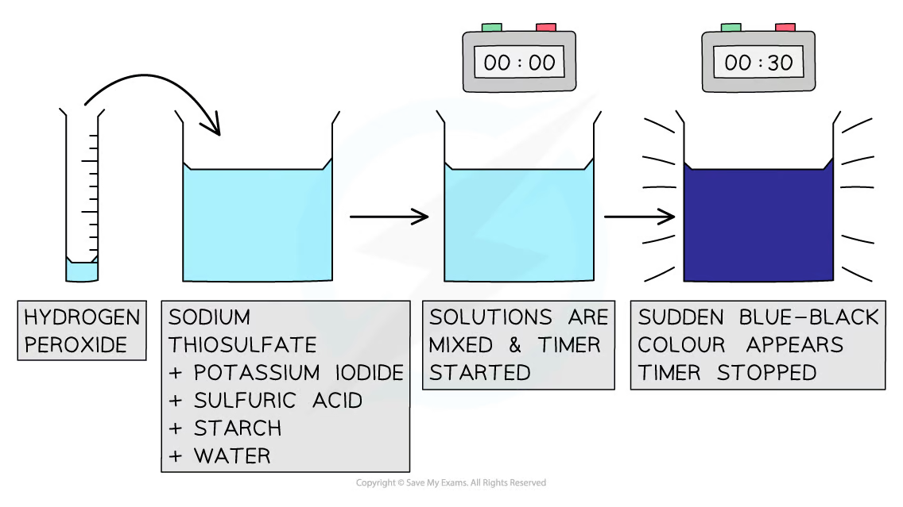
Variables and procedure
改变 potassium iodide concentration，同时用 water 补足体积，使 total volume、acid、hydrogen peroxide、thiosulfate 和 starch 的 amounts 保持 constant。可以使用以下 plan：
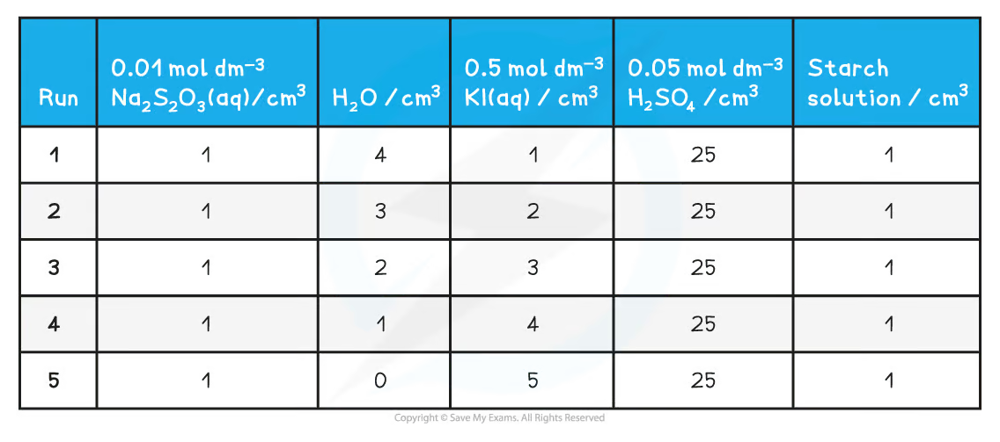
- Measure all solutions in separate measuring cylinders or pipettes。
- Add hydrogen peroxide to start the reaction and start the timer at the same moment。
- Mix rapidly and stop the timer when the sudden blue-black colour appears。
- Repeat each condition and calculate a mean time。
- Calculate
1/tand plot rate against[I-]or[KI]。
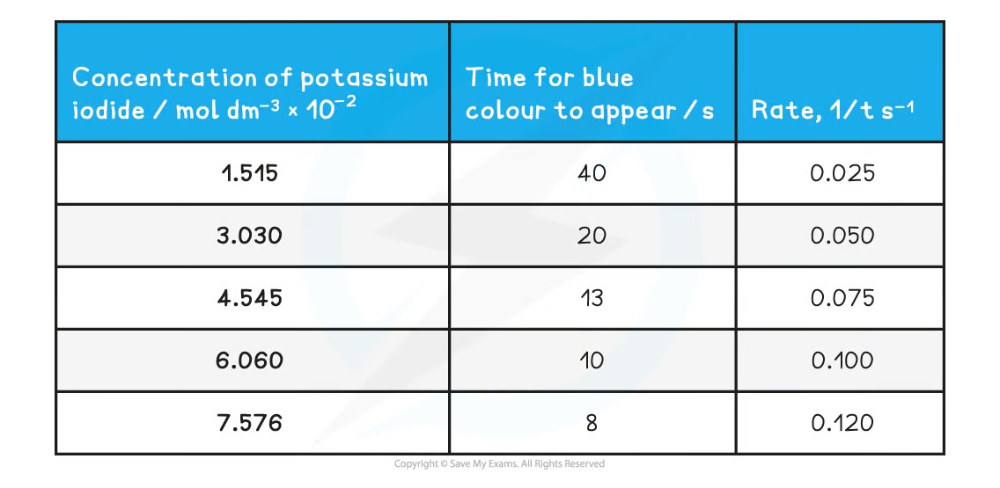
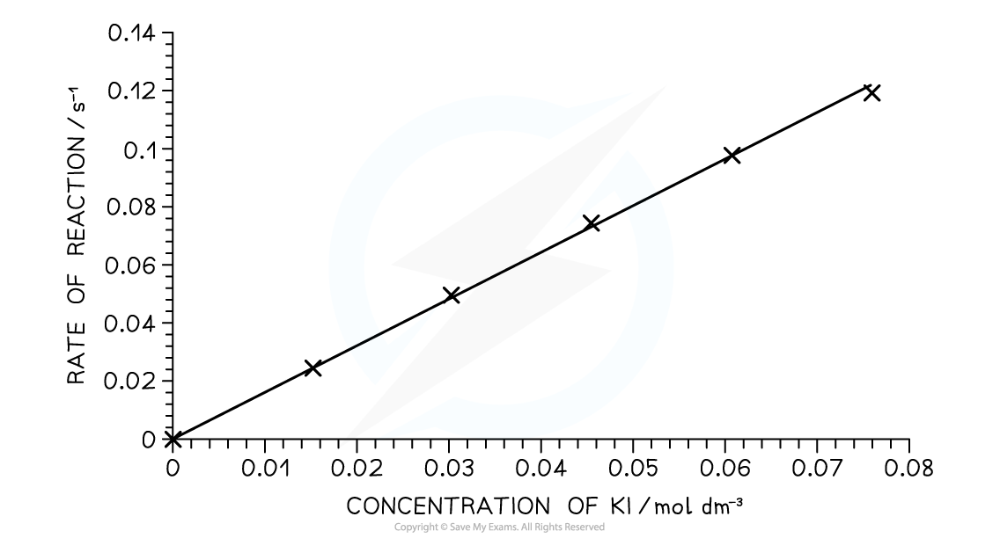
Evaluation
- use a thermostatically controlled water bath if temperature is a variable；
- use the same observer or a colorimeter to reduce endpoint subjectivity；
- start timing immediately after mixing and use consistent mixing；
- do not change total volume when changing one reactant concentration；
- a straight line through the origin for rate against concentration supports first-order dependence；
- scatter around the line may arise from human reaction time、incomplete mixing or uncertainty in measuring small volumes。
6.1.3 Activation Energy
Core Practical 10: finding Ea
The reaction used involves bromide and bromate(V) ions：
\[ \ce{BrO3^- + 5Br^- + 6H+ -> 3Br2 + 3H2O} \]
The bromine reacts with phenol：
\[ \ce{C6H5OH + 3Br2 -> C6H2Br3OH + 3HBr} \]
Methyl red / methyl orange can indicate the endpoint because bromine eventually bleaches the indicator. At a fixed composition，the same visible endpoint corresponds to approximately the same extent of reaction，so a shorter time means a larger rate constant。
Method
- Place a measured phenol solution and bromide / bromate solution in separate boiling tubes。
- Add indicator and equilibrate both tubes in a water bath at a measured temperature。
- Mix rapidly，start the stopwatch，and record the time for the indicator to disappear。
- Repeat at several temperatures，for example 310、335、360 and 385 K。
- Treat
kas proportional to1/twhen the same endpoint and concentrations are used。
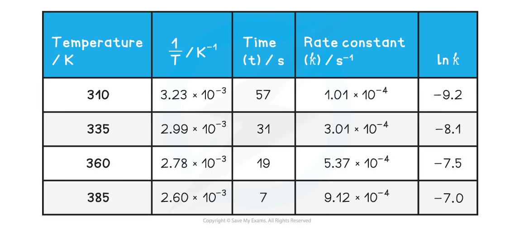
Arrhenius analysis
The Arrhenius equation is：
\[ k=Ae^{-E_a/(RT)} \]
Taking natural logarithms：
\[ \ln k=-\frac{E_a}{R}\frac{1}{T}+\ln A \]
Plot ln k on the y-axis against 1/T on the x-axis：
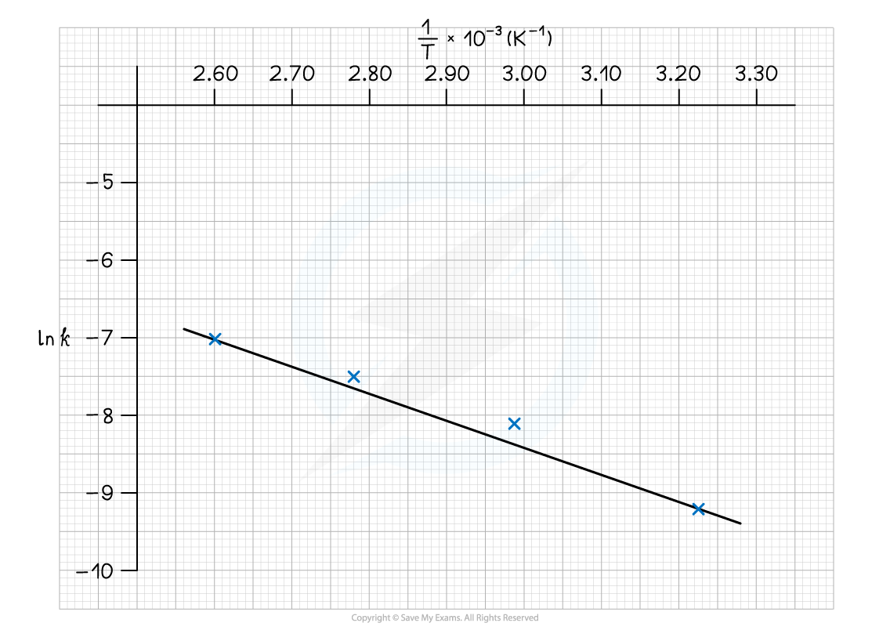
\[ \text{gradient}=-\frac{E_a}{R} \]
因此：
\[ E_a=-R\times\text{gradient} \]
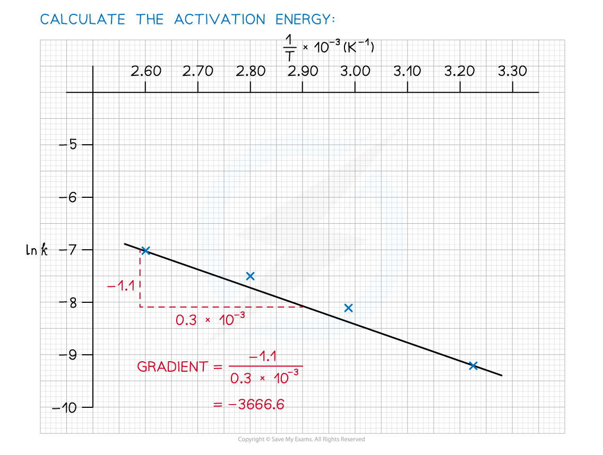
Intercept 是 ln A；选取 graph 上的 point 并代入 equation 可计算 A：
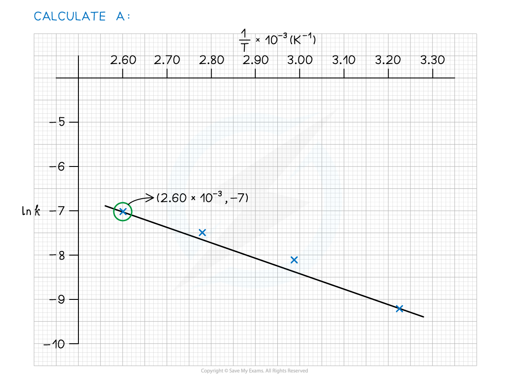
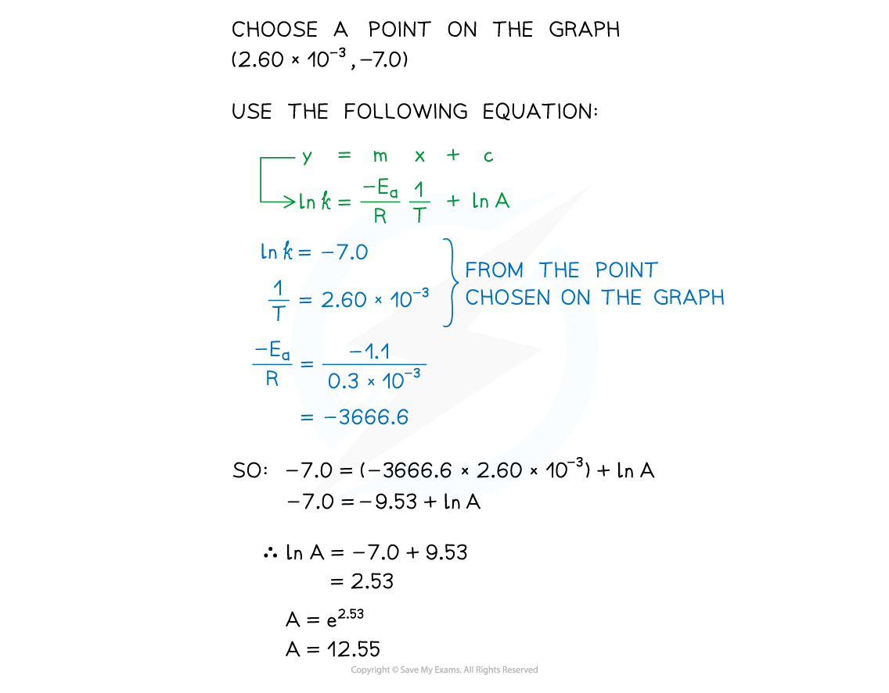
Evaluation
- use a water bath rather than direct flame to obtain more uniform temperature；
- measure the actual temperature of the reaction mixture，not only the bath temperature；
- allow both solutions to reach the target temperature before mixing；
- use a lid or boiling tube stopper where appropriate to reduce evaporation；
- use a temperature range large enough to produce a measurable change in
t； - keep concentrations、volumes、indicator amount and endpoint criterion constant；
- repeat each temperature and calculate a mean；
- a non-linear Arrhenius plot suggests temperature control problems，timing error or a change in mechanism。
6.1.4 Finding Ka Values
Core Practical 11: weak-acid titration
For a weak monoprotic acid HA：
\[ \ce{HA(aq) <=> H+(aq) + A-(aq)} \]
\[ K_a=\frac{[H^+][A^-]}{[HA]} \]
At the half-equivalence point，half of the original HA has been neutralised，so [HA] = [A-] and：
\[ K_a=[H^+],\qquad pK_a=pH \]
Method and graph
- Pipette a measured volume of weak acid into a beaker and add distilled water if needed。
- Calibrate the pH meter with suitable buffer solutions。
- Add standard alkali from a burette in small portions，stirring after each addition。
- Record pH and volume of alkali；use smaller additions near the steep section。
- Plot pH against volume of base added。
- Locate the equivalence point；the half-equivalence volume is
V/2。 - Read the pH at
V/2and calculatepKaandKa。
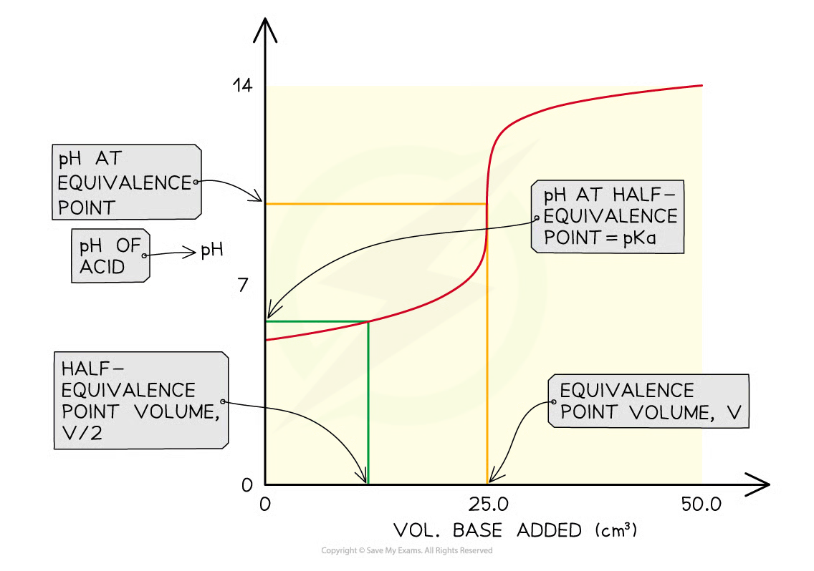
Practical evaluation
- calibrate the pH meter before use and rinse the electrode with distilled water；
- remove drops from the outside of the burette tip and record the initial / final readings consistently；
- wait for the pH reading to stabilise after each addition；
- use a magnetic stirrer or consistent manual stirring；
- take closely spaced readings around the equivalence region；
- carbon dioxide absorption、poor calibration and overshooting the equivalence point can shift the curve；
- repeat the titration to obtain a concordant equivalence volume。
6.1.5 Electrochemical Cells
Core Practical 12: measuring EMF
An electrochemical cell consists of two half-cells connected by an external circuit and a salt bridge. Typical equipment includes：
- two beakers and metal electrodes such as Zn、Cu、Fe or Ag；
- approximately
1.0 mol dm^-3solutions containing the relevant metal ions； - a salt bridge soaked in saturated
KNO3(aq)； - wires with crocodile clips；
- a high-resistance voltmeter。
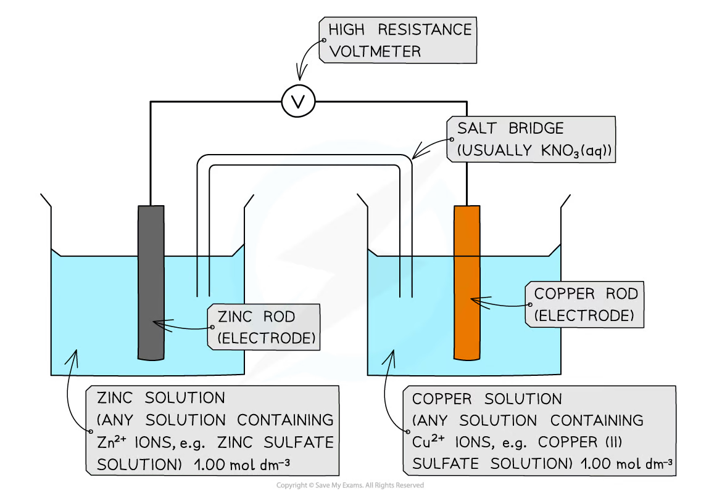
The salt bridge completes the ionic circuit and maintains electrical neutrality；the high-resistance voltmeter measures potential difference while drawing negligible current。
Measurements and calculations
- Polish the metal electrodes and rinse them with distilled water。
- Place each electrode in its corresponding metal-ion solution。
- Connect the half-cells using the salt bridge and voltmeter。
- Record the sign and magnitude of the stable EMF。
- Repeat with different combinations of half-cells。
For a spontaneous cell：
\[ E_{\mathrm{cell}}=E_{\mathrm{positive\ electrode}}-E_{\mathrm{negative\ electrode}} \]
The more positive reduction potential is the positive electrode / cathode，where reduction occurs；the other is the negative electrode / anode，where oxidation occurs。
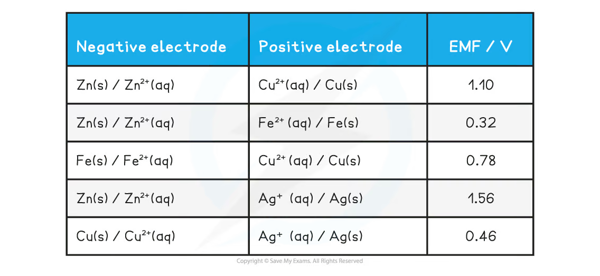
Evaluation and safety
- use clean electrodes with a reproducible surface area；
- use the same solution concentration and temperature for comparison；
- ensure the salt bridge makes good contact with both solutions but does not mix them excessively；
- do not use an ammeter or low-resistance circuit because current flow changes the measured potential；
- wait for a stable reading and repeat each cell combination；
- a contaminated electrode、different ion concentration、poor salt-bridge contact or liquid junction potential can cause anomalous EMF；
- wear eye protection and handle metal-ion solutions according to their hazard information。
Data, uncertainty and exam technique
Turning practical work into marks
回答 practical question 时按以下顺序组织：
- Method：写 apparatus、reagent、measurement and endpoint；
- Variables：明确 independent、dependent 和 control variables；
- Data：列出 raw readings、units、repeat values 和 mean；
- Processing：展示 one sample calculation，保持 significant figures；
- Graph：label axes、units、scale、best-fit line and gradient triangle；
- Conclusion：用 graph / calculation 的 evidence 回答题目；
- Evaluation：指出具体 systematic / random error，并给出可执行 improvement。
Common calculations
rate = 1/tonly when the same fixed endpoint amount is used；gradient = -Ea/Rfor an Arrhenius plot；- at half-equivalence，
pH = pKa； Ka = 10^-pKa；Ecell = Epositive - Enegative。
Exam checklist
Source note
本页面对应：Note per Chapter/Note per Chapter/6.1 Advanced Physical Chemistry Core Practicals.pdf.pdf。页面中的 practical diagrams、tables 和 graphs 均从该 PDF 的内嵌图像独立提取并保存到 assets/notes/advanced-physical-core-practicals/。